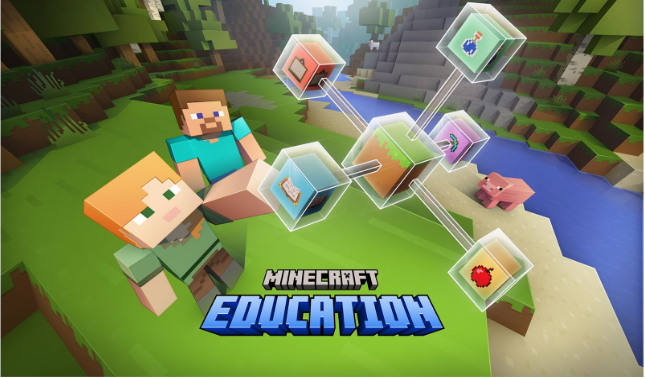
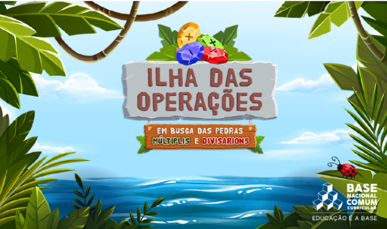
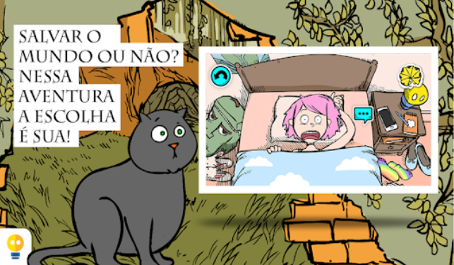
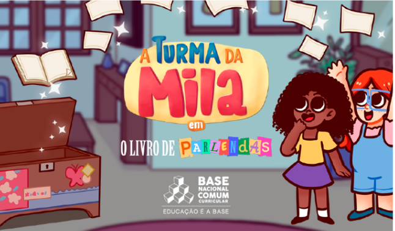

Exemplos de Jogos Educacionais
Os jogos educacionais estão cada vez mais presentes no ambiente escolar e no aprendizado individual,
pois combinam diversão com conhecimento. Para facilitar a compreensão de como esses jogos funcionam na prática, aqui estão alguns exemplos de jogos que podem ser
utilizados no ensino, cada um com sua proposta pedagógica e forma de interação.
🟦 Jogo 1: Minecraft Education

Minecraft Education estimula criatividade, exploração e construção em um mundo aberto.
Ensina lógica, matemática, ciências e trabalho em equipe por meio da experimentação, como destaca Carvalho (2018). A mecânica de criar e resolver problemas torna o
aluno ativo no processo. Em sala, pode ser usado em projetos investigativos e situações-problema. Habilidades desenvolvidas: colaboração, planejamento, raciocínio
lógico e autonomia.;
🟩 Jogo 2: ilha das operações

Ilha das Operações trabalha as quatro operações matemáticas de forma lúdica e gradual.
Sua proposta educativa reforça cálculo e raciocínio lógico, alinhado a Furtado (2024) sobre prática guiada. O jogo é pensado para alunos do ensino fundamental que
precisam consolidar conteúdos básicos. Beneficia a memorização e a resolução de problemas contextualizados. Habilidades desenvolvidas: cálculo mental, atenção, foco
e organização lógica.
🟧 Jogo 3: O Mistério do Sr. Gratus

Este jogo investigativo incentiva leitura, interpretação e tomada de decisões a partir de pistas.
A narrativa interativa ajuda o aluno a analisar informações e formular hipóteses, como defendem Sousa et al. (2011). Ele trabalha compreensão textual e raciocínio
lógico em atividades de investigação. Ideal para fortalecer o interesse pela leitura. Habilidades desenvolvidas: interpretação, inferência, análise crítica e
resolução de enigmas.
🟥 Jogo 4: Turma da Mila em: O livro de parlendas

O jogo aborda alfabetização e consciência fonológica por meio de atividades com parlendas. A repetição
rítmica e as interações simples auxiliam na leitura inicial, como indica Freitas (2018). É pensado para crianças em processo de alfabetização e torna a aprendizagem
mais envolvente. Trabalha identificação de sons, palavras e estruturas básicas. Habilidades desenvolvidas: fluência de leitura, vocabulário, percepção sonora e
compreensão textual.
Por que mostrar exemplos de jogos?
Como afirmam Carvalho (2018) e Guzzo (2020), apresentar exemplos de jogos educacionais ajuda a mostrar que
aprender pode ser divertido e participativo. Furtado (2024) destaca que esses exemplos facilitam a visualização das habilidades desenvolvidas, como lógica, concentração
e criatividade. Silva et al. (2023) reforçam que, ao conhecer jogos reais, o aluno percebe que eles vão além do entretenimento e se tornam ferramentas de aprendizagem.
Além disso, há muitos jogos educativos que abordam conteúdos do cotidiano, como cinema, culinária e programação. Em programação, por exemplo, o CodeCombat ensina lógica
e escrita de código de forma interativa. Na área de cinema, jogos como MovieStarPlanet trabalham expressão criativa, narrativa e construção de personagens; já em
culinária, títulos como Cooking Mama ou Good Pizza, Great Pizza desenvolvem organização, sequenciamento e tomada de decisão. Esses exemplos mostram como diferentes áreas
de interesse dos jovens também podem ser exploradas pedagogicamente.